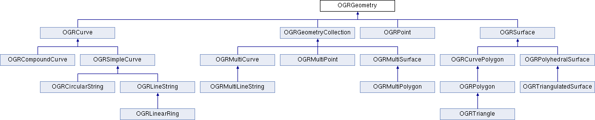

RFC 64: Triangle, Polyhedral surface and TIN¶
Authors: Avyav Kumar Singh, Even Rouault
Contact: avyavkumar at gmail dot com, even.rouault at spatialys.com
Status: Adopted, implemented
Implementation version: GDAL 2.2
Summary¶
As of now, the OGRGeometry class (the base class from which
all the subtypes are derived) is limited to OGRCompoundCurve,
OGRCircularString, OGRLinearRing, OGRMultiLineString, OGRMultiPoint,
OGRMultiPolygon, OGRMultiCurve, OGRSimpleCurve, OGRCurvePolygon and
OGRPolygon.
This RFC addresses the addition of the following new geometries in OGRGeometry:
Triangle - A subset of polygons, the fundamental difference is that it is made of 3 nodes only (actually 4, with the last one being the repetition of the first one) and ONLY ONE exterior boundary and NO interior polygons.
PolyhedralSurface - A 3D figure made exclusively of Polygons.
TriangulatedSurface - A subset of PolyhedralSurface; a 3D figure which consists exclusively of Triangles.
Reference documents¶
OpenGIS Simple Feature Access Part 1 : Common Architecture,v 1.2.1, a.k.a. SFA 1.2.1
BNF of WKT encoding: extracted from SQL/MM Part 3
BNF of WKB encoding: extracted from SQL/MM Part 3
Core changes¶
The new class hierarchy is the following and is mostly consistent with SQL/MM Part 3
Some prelimenary work had already been done prior to this proposal, such as including the necessary WKB codes in <ogr_core.h>.
Additionally, the SFCGAL library is a new optional dependency of GDAL (build support only done for Unix for now). The minimum version tested to build is 1.2.2 (as found in Ubuntu 16.04). As mentioned in its home page, “SFCGAL is a C++ wrapper library around CGAL with the aim of supporting ISO 19107:2013 and OGC Simple Features Access 1.2 for 3D operations.” It is mostly used as a potential geometry backend by PostGIS. It has a C API, that is the one we use.
SFCGAL functions may be used by methods of OGRGeometry (currently IsValid(), Distance(), ConvexHull(), Intersection(), Union(), Difference(), SymDifference(), Crosses()), as soon as one of the geometry operands is a Triangle, PolyhedralSurface or TIN.
Two new OGRGeometry methods are used to convert SFCGAL geometries <-> OGR geometries.
static sfcgal_geometry_t* OGRexportToSFCGAL(OGRGeometry *poGeom);
static OGRGeometry* SFCGALexportToOGR(sfcgal_geometry_t* _geometry);
Besides SFCGAL, GEOS methods are still used in some cases, but with the following limitations - a Triangle is converted to a Polygon with one exterior ring; Polyhedral Surfaces and Triangulated Surfaces are converted to geometry collection of polygons. (each Triangle in a Triangulated Surface is converted to a Polygon as described previously)
The API for the new geometries introduced includes -
Overwriting existing methods for Polygon in the case of Triangle API. A complete API is provided below -
class CPL_DLL OGRTriangle : public OGRPolygon
{
private:
bool quickValidityCheck() const;
protected:
//! @cond Doxygen_Suppress
virtual OGRSurfaceCasterToPolygon GetCasterToPolygon() const CPL_OVERRIDE;
virtual OGRErr importFromWKTListOnly( char ** ppszInput, int bHasZ, int bHasM,
OGRRawPoint*& paoPoints, int& nMaxPoints,
double*& padfZ ) CPL_OVERRIDE;
//! @endcond
public:
OGRTriangle();
OGRTriangle(const OGRPoint &p, const OGRPoint &q, const OGRPoint &r);
OGRTriangle(const OGRTriangle &other);
OGRTriangle(const OGRPolygon &other, OGRErr &eErr);
OGRTriangle& operator=(const OGRTriangle& other);
virtual ~OGRTriangle();
virtual const char *getGeometryName() const CPL_OVERRIDE;
virtual OGRwkbGeometryType getGeometryType() const CPL_OVERRIDE;
// IWks Interface
virtual OGRErr importFromWkb( unsigned char *, int = -1,
OGRwkbVariant=wkbVariantOldOgc ) CPL_OVERRIDE;
virtual OGRErr importFromWkt( char ** ) CPL_OVERRIDE;
// New methods rewritten from OGRPolygon/OGRCurvePolygon/OGRGeometry
virtual OGRErr addRingDirectly( OGRCurve * poNewRing ) CPL_OVERRIDE;
//! @cond Doxygen_Suppress
static OGRGeometry* CastToPolygon(OGRGeometry* poGeom);
//! @endcond
};
The PolyhedralSurface API is derived from OGRSurface. Internally, it uses an OGRMultiPolygon to store all the Polygons comprising the Polyhedral Surface. Most of the implementations of the methods just reference corresponding OGRMultiPolygon methods with checks to ensure that conditions are maintained.
class CPL_DLL OGRPolyhedralSurface : public OGRSurface
{
protected:
//! @cond Doxygen_Suppress
friend class OGRTriangulatedSurface;
OGRMultiPolygon oMP;
virtual OGRSurfaceCasterToPolygon GetCasterToPolygon() const CPL_OVERRIDE;
virtual OGRSurfaceCasterToCurvePolygon GetCasterToCurvePolygon() const CPL_OVERRIDE;
virtual OGRBoolean isCompatibleSubType( OGRwkbGeometryType ) const;
virtual const char* getSubGeometryName() const;
virtual OGRwkbGeometryType getSubGeometryType() const;
OGRErr exportToWktInternal (char ** ppszDstText, OGRwkbVariant eWkbVariant, const char* pszSkipPrefix ) const;
virtual OGRPolyhedralSurfaceCastToMultiPolygon GetCasterToMultiPolygon() const;
static OGRMultiPolygon* CastToMultiPolygonImpl(OGRPolyhedralSurface* poPS);
//! @endcond
public:
OGRPolyhedralSurface();
OGRPolyhedralSurface(const OGRPolyhedralSurface &poGeom);
virtual ~OGRPolyhedralSurface();
OGRPolyhedralSurface& operator=(const OGRPolyhedralSurface& other);
// IWks Interface
virtual int WkbSize() const CPL_OVERRIDE;
virtual const char *getGeometryName() const CPL_OVERRIDE;
virtual OGRwkbGeometryType getGeometryType() const CPL_OVERRIDE;
virtual OGRErr importFromWkb( unsigned char *, int=-1, OGRwkbVariant=wkbVariantOldOgc ) CPL_OVERRIDE;
virtual OGRErr exportToWkb( OGRwkbByteOrder, unsigned char *, OGRwkbVariant=wkbVariantOldOgc ) const CPL_OVERRIDE;
virtual OGRErr importFromWkt( char ** ) CPL_OVERRIDE;
virtual OGRErr exportToWkt( char ** ppszDstText, OGRwkbVariant=wkbVariantOldOgc ) const CPL_OVERRIDE;
// IGeometry methods
virtual int getDimension() const CPL_OVERRIDE;
virtual void empty() CPL_OVERRIDE;
virtual OGRGeometry *clone() const CPL_OVERRIDE;
virtual void getEnvelope(OGREnvelope * psEnvelope) const CPL_OVERRIDE;
virtual void getEnvelope(OGREnvelope3D * psEnvelope) const CPL_OVERRIDE;
virtual void flattenTo2D() CPL_OVERRIDE;
virtual OGRErr transform(OGRCoordinateTransformation*) CPL_OVERRIDE;
virtual OGRBoolean Equals(OGRGeometry*) const CPL_OVERRIDE;
virtual double get_Area() const CPL_OVERRIDE;
virtual OGRErr PointOnSurface(OGRPoint*) const CPL_OVERRIDE;
static OGRMultiPolygon* CastToMultiPolygon(OGRPolyhedralSurface* poPS);
virtual OGRBoolean hasCurveGeometry(int bLookForNonLinear = FALSE) const CPL_OVERRIDE;
virtual OGRErr addGeometry( const OGRGeometry * );
OGRErr addGeometryDirectly(OGRGeometry *poNewGeom);
int getNumGeometries() const;
OGRGeometry* getGeometryRef(int i);
const OGRGeometry* getGeometryRef(int i) const;
virtual OGRBoolean IsEmpty() const CPL_OVERRIDE;
virtual void setCoordinateDimension( int nDimension ) CPL_OVERRIDE;
virtual void set3D( OGRBoolean bIs3D ) CPL_OVERRIDE;
virtual void setMeasured( OGRBoolean bIsMeasured ) CPL_OVERRIDE;
virtual void swapXY() CPL_OVERRIDE;
OGRErr removeGeometry( int iIndex, int bDelete = TRUE );
};
The Triangulated Surface API is similar to Polyhedral Surface, and the MultiPolygon class was tweaked slightly to include methods to run which consisted of subgeometries of the form Triangle. (A MultiPolygon is strictly a collection of Polygons). These methods are internal to OGRMultiPolygon and cannot be accessed by a public user. For instance, the
OGRMultiPolygon::addGeometryDirectlymethod has a check that the subgeometry added to it should be of the type POLYGON. Rather than mess around with the existing function, a new function has been written which does not implement this check -
/************************************************************************/
/* _addGeometryDirectly() */
/* Only to be used in conjunction with OGRTriangulatedSurface. */
/* DO NOT USE IT ELSEWHERE. */
/************************************************************************/
OGRErr OGRMultiPolygon::_addGeometryDirectly( OGRGeometry * poNewGeom )
{
if ( wkbFlatten(poNewGeom->getGeometryType()) != wkbTriangle)
return OGRERR_UNSUPPORTED_GEOMETRY_TYPE;
if( poNewGeom->Is3D() && !Is3D() )
set3D(TRUE);
if( poNewGeom->IsMeasured() && !IsMeasured() )
setMeasured(TRUE);
if( !poNewGeom->Is3D() && Is3D() )
poNewGeom->set3D(TRUE);
if( !poNewGeom->IsMeasured() && IsMeasured() )
poNewGeom->setMeasured(TRUE);
OGRGeometry** papoNewGeoms = (OGRGeometry **) VSI_REALLOC_VERBOSE( papoGeoms,
sizeof(void*) * (nGeomCount+1) );
if( papoNewGeoms == NULL )
return OGRERR_FAILURE;
papoGeoms = papoNewGeoms;
papoGeoms[nGeomCount] = poNewGeom;
nGeomCount++;
return OGRERR_NONE;
}
The Triangulated Surface API is as follows -
class CPL_DLL OGRTriangulatedSurface : public OGRPolyhedralSurface
{
protected:
//! @cond Doxygen_Suppress
virtual OGRBoolean isCompatibleSubType( OGRwkbGeometryType ) const CPL_OVERRIDE;
virtual const char* getSubGeometryName() const CPL_OVERRIDE;
virtual OGRwkbGeometryType getSubGeometryType() const CPL_OVERRIDE;
virtual OGRPolyhedralSurfaceCastToMultiPolygon GetCasterToMultiPolygon() const CPL_OVERRIDE;
static OGRMultiPolygon* CastToMultiPolygonImpl(OGRPolyhedralSurface* poPS);
//! @endcond
public:
OGRTriangulatedSurface();
OGRTriangulatedSurface(const OGRTriangulatedSurface &other);
~OGRTriangulatedSurface();
OGRTriangulatedSurface& operator=(const OGRTriangulatedSurface& other);
virtual const char *getGeometryName() const CPL_OVERRIDE;
virtual OGRwkbGeometryType getGeometryType() const CPL_OVERRIDE;
// IWks Interface
virtual OGRErr addGeometry( const OGRGeometry * ) CPL_OVERRIDE;
static OGRPolyhedralSurface* CastToPolyhedralSurface(OGRTriangulatedSurface* poTS);
};
Geometry types¶
The new geometry WKB values can be seen as below -
Geometry Type |
2D |
Z |
M |
ZM |
|---|---|---|---|---|
PolyhedralSurface |
0015 |
1015 |
2015 |
3015 |
TIN |
0016 |
1016 |
2016 |
3016 |
Triangle |
0017 |
1017 |
2017 |
3017 |
Geometry conversions¶
The OGRGeometryFactory::forceTo() and forceToMultiPolygon() methods have been enhanced to support conversions between the new geometry types, and towards multipolygon. Note that converting a TIN or a PolyhedralSurface into a MultiPolygon is semantically incorrect since a MultiPolygon is suppose to contain geometries in the same plane, but it might help when converting those new geometry types into a format that doesn’t support them (and such conversion was for example implicitly done in the reading side of the shapefile driver previously)
Changes in drivers¶
PostGIS¶
No changes done to the driver explicitly, but it has been ensured that
PG <-> OGR compatibility has been maintained. PostGIS 3D functions work
on OGR, simple scripts work, for example from
autotest/ogr/ogr_pg.py, we have -
wkt_list = ['POLYHEDRALSURFACE (((0 0 0,0 0 1,0 1 1,0 1 0,0 0 0)),((0 0 0,0 1 0,1 1 0,1 0 0,0 0 0)),((0 0 0,1 0 0,1 0 1,0 0 1,0 0 0)),((1 1 0,1 1 1,1 0 1,1 0 0,1 1 0)),((0 1 0,0 1 1,1 1 1,1 1 0,0 1 0)),((0 0 1,1 0 1,1 1 1,0 1 1,0 0 1)))',
'TIN (((0 0 0,0 0 1,0 1 0,0 0 0)),((0 0 0,0 1 0,1 1 0,0 0 0)))',
'TRIANGLE ((48 36 84,32 54 64,86 11 54,48 36 84))' ]
for i in range(0,3):
gdaltest.pg_ds.ExecuteSQL( "INSERT INTO zgeoms (field_no, wkb_geometry) VALUES (%d,GeomFromEWKT('%s'))" % ( i, wkt_list[i] ) )
ShapeFile¶
Shapefiles have the concept of a “MultiPatch” object. The MultiPatch can be made of several parts, which are
A TriangleStrip is a linked strip of triangles, where every vertex (after the first two) completes a new triangle. A new triangle is always formed by connecting the new vertex with its two immediate predecessors.
A TriangleFan is a linked fan of triangles, where every vertex (after the first two) completes a new triangle. A new triangle is always formed by connecting the new vertex with its immediate predecessor and the first vertex of the part.
Rings (outer ring, inner ring, first ring, “non-typed” ring) Up to now multipatch were read as MultiPolygon. Now, in general, a GeometryCollection will be returned, with zero or several TIN corresponding to the TriangleStrip/TriangleFan and zero or one MultiPolygon with all the rings. If there’s only one TIN or one MultiPolygon, it will be returned as a top-level geometry. The layer type will be Unknown On writing, the SHPT layer creation option is extended to recognize the MULTIPATCH value, and the current logic to guess the shape type from the layer geometry type or the geometry type of the first feature is extended to support MULTIPATCH. On a MULTIPATCH layer, geometries of type TIN, POLYHEDRALSURFACE, MULTIPOLYGON or GEOMETRYCOLLECTION (whose subgeometries are on of the 3 previous types) are accepted and converted to a MultiPatch object, trying to use TriangleStrip and TriangleFan if the triangles are in the expected order.
FileGDB, OpenFileGDB¶
The FileGDB format support the MultiPatch object as well, with one extension. There is a new type of part, which is made of several triangles whose organization is not TriangleStrip or TriangleFan. Both drivers have been upgraded to work like the ShapeFile driver on the reading side. On the writing side, the FileGDB driver will automatically write a MultiPatch if the layer geometry type is TIN or PolyhedralSurface. The layer option that existed before CREATE_MULTIPATCH=YES can still be used to force writing as MultiPatch
GML¶
The GML driver has been modified for both input and output -> Triangle, PolyhedralSurface and TriangulatedSurface are capable of being read/written from/to a GML document. Sample examples include -
'TRIANGLE ((0 0,0 1,0 1,0 0))' is parsed to -
'<gml:Triangle>
<gml:exterior>
<gml:LinearRing>
<gml:posList>0 0 0 1 0 1 0 0</gml:posList>
</gml:LinearRing>
</gml:exterior>
</gml:Triangle>'
<gml:PolyhedralSurface>
<gml:polygonPatches>
<gml:PolygonPatch>
<gml:exterior>
<gml:LinearRing>
<gml:posList srsDimension="3">1 2 3 4 5 6 7 8 9 1 2 3</gml:posList>
</gml:LinearRing>
</gml:exterior>
</gml:PolygonPatch>
<gml:PolygonPatch>
<gml:exterior>
<gml:LinearRing>
<gml:posList srsDimension="3">10 11 12 13 14 15 16 17 18 10 11 12</gml:posList>
</gml:LinearRing>
</gml:exterior>
<gml:interior>
<gml:LinearRing>
<gml:posList srsDimension="3">19 20 21 22 23 24 25 26 27 19 20 21</gml:posList>
</gml:LinearRing>
</gml:interior>
</gml:PolygonPatch>
</gml:polygonPatches>
</gml:PolyhedralSurface>"""
gets parsed to 'POLYHEDRALSURFACE Z (((1 2 3,4 5 6,7 8 9,1 2 3)),((10 11 12,13 14 15,16 17 18,10 11 12),(19 20 21,22 23 24,25 26 27,19 20 21)))'
Each PolygonPatch/Patch corresponds to one Polygon in a PolyhedralSurface.
Finally, 'POLYHEDRALSURFACE EMPTY' parses to
'<gml:PolyhedralSurface>
<gml:polygonPatches>
</gml:polygonPatches>
</gml:PolyhedralSurface>'
Note that on the writing side those geometries are only generated for a GML 3 output.
DXF¶
The changes in the DXF driver include converting a PolyFaceMesh (a subtype of PolyLine) to PolyhedralSurface. This is illustrated by a bug on the GDAL trac - https://trac.osgeo.org/gdal/ticket/6246. A PolyFace Mesh consists of points defined initially using specific codes, then these points are described as part of a polygon (a polygon can have four points at the maximum). Reading the PolyFace Mesh is supported in OGR as of now, but write support for it as well (though not implemented by me in this changeset) should be possible as well now.
GeoPackage¶
The GeoPackage specification supports [Multi]Point, [Multi]LineString, [Multi]Polygon and GeometryCollection in its core. Curve geometry types are mentioned as a registered extension. But Triangle, PolyhedralSurface or TIN are not mentioned at all. However the GeoPackage geometry blob format being based on ISO WKB, support for the new geometry types did not really require new code. Hence we have kepts this possibility of reading/writing the 3 new geometry types, but with a warning emitted that a non-standard extension will be used on the writing side.
Other drivers¶
The CSV, VRT, PGDump, SQLite (but not Spatialite) drivers support the new geometry types. A couple of drivers have been modified, so as not to crash on the writing side when being provided with the new geometry types. Besides the previously mentioned drivers, the following drivers have been verified to not crash (but potentially error out, or skip unrecognized geometries): MySQL, OCI, KML, LIBKML, GeoJSON, MapInfo
Documentation¶
Using standard Doxygen documentation procedure.
Compatibility¶
Many applications will not be able to properly deal with the new geometry types that may now be returned by some drivers. In GDAL 2.1, the new types were introduced mentioning that they might be returned by GDAL in the future. Code should either skip the new geometries, deal with them properly or use the OGR_G_ForceTo() function to convert to a geometry type it supports.
Testing¶
Very few changes have been made so that the existing autotest suite still passes. New geometry classes and conversion methods has been added to ogr_geom.py and ogr_gml_geom.py. Updated drivers have received new tests also.
Implementation¶
Done by Avyav Kumar Singh, under the Google Summer of Code 2016 program, and fine tuned / extended / integrated by Even Rouault.
The proposed implementation lies in the “gsoc-triangle-ps-tin-rebased” branch of the https://github.com/rouault/gdal2/tree/gsoc-triangle-ps-tin-rebased repository.
Voting history¶
+1 from JukkaR, DanielM, HowardB and EvenR